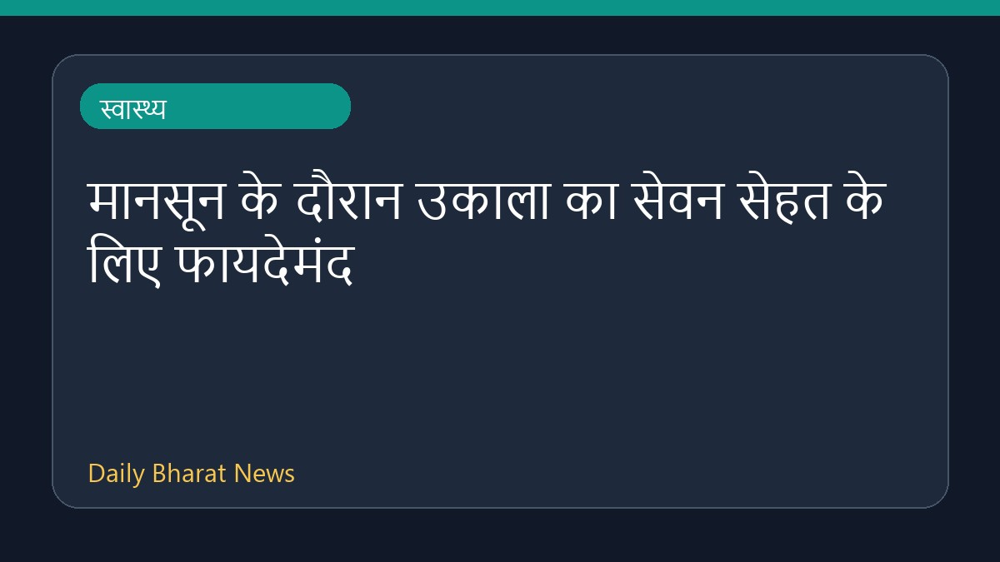
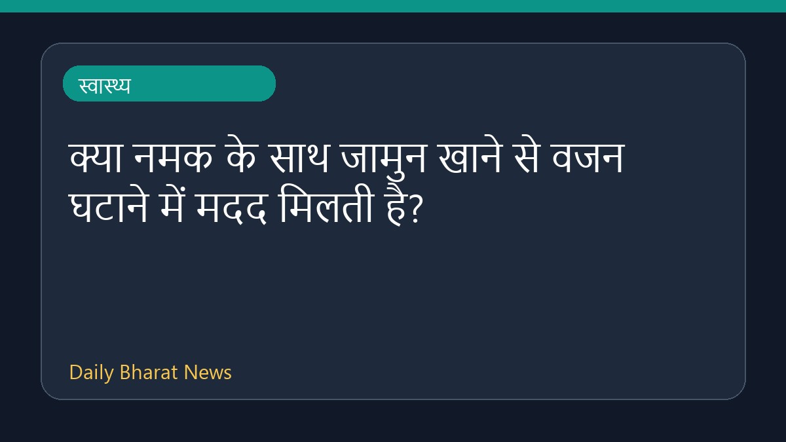
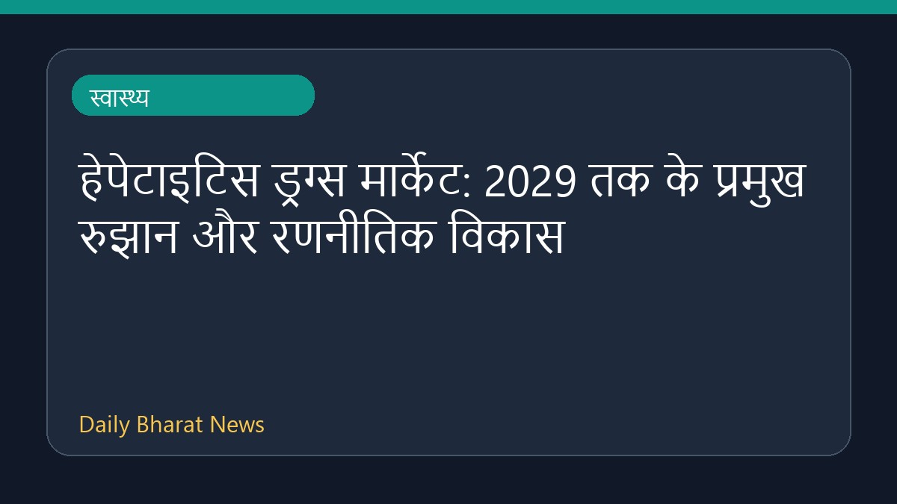
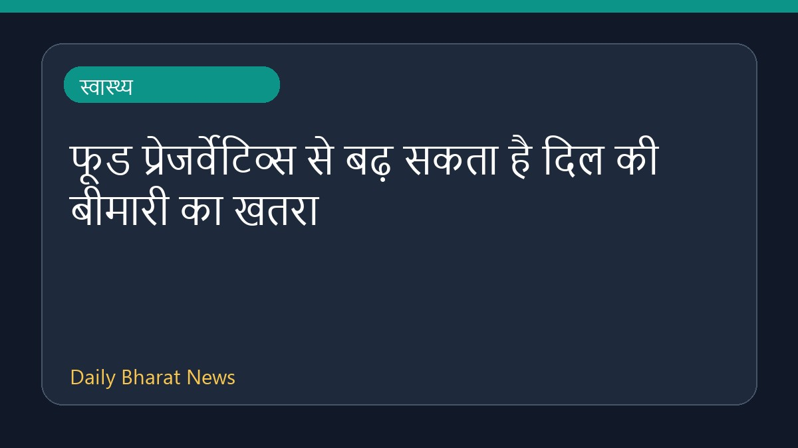
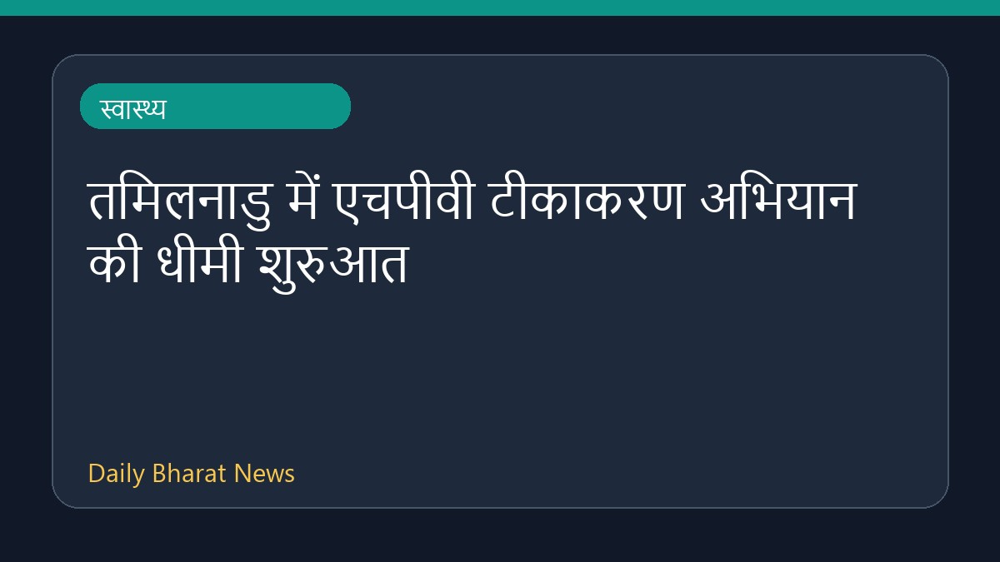
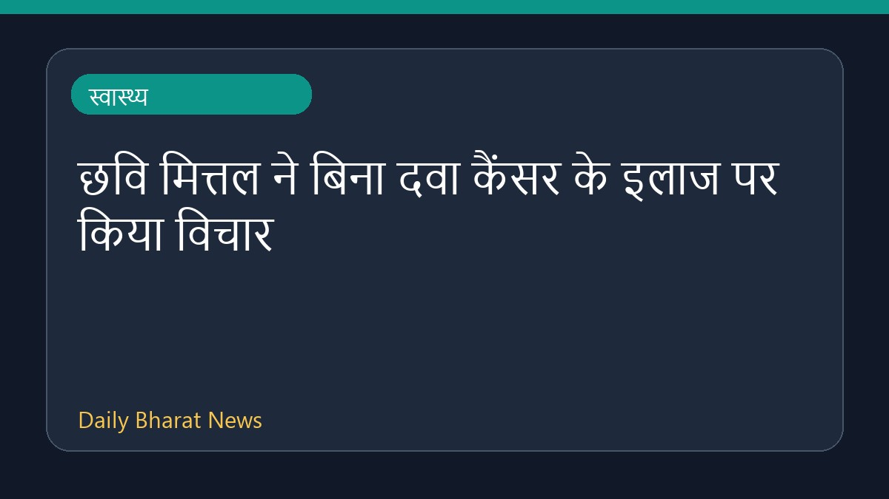
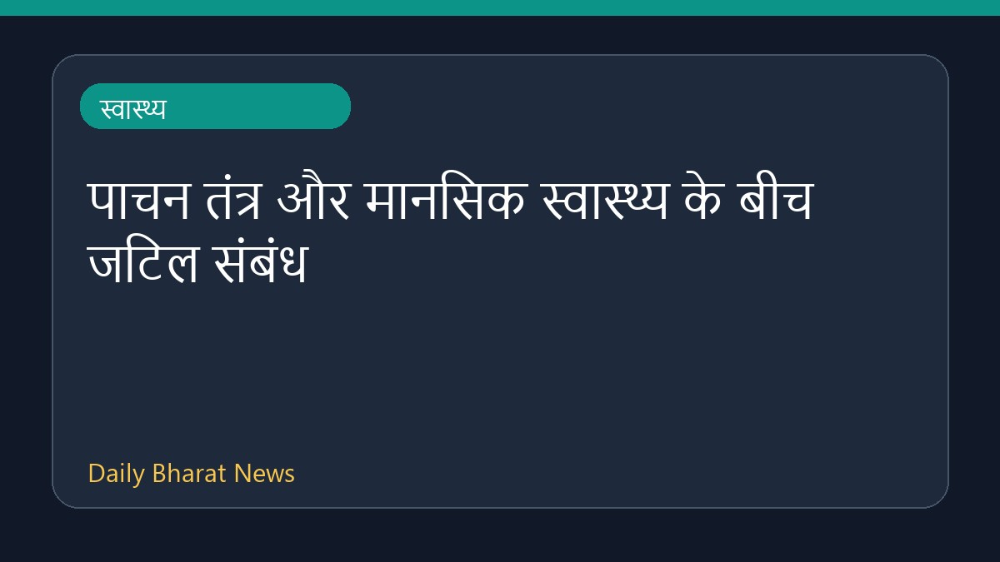
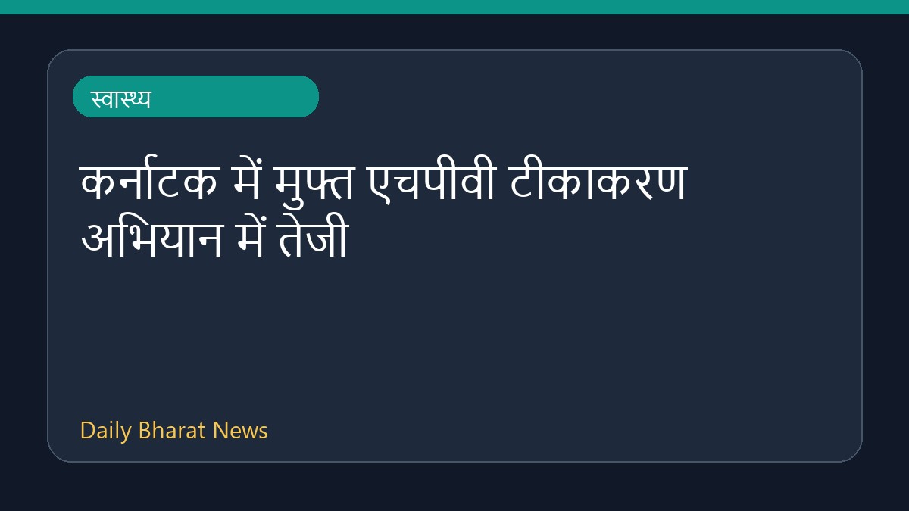

स्वास्थ्यमानसून के मौसम में उकाला का सेवन शरीर के लिए काफी गुणकारी साबित हो सकता है। स्वास्थ्य से जुड़ी जानकारी के अनुसार, इस मौसम में उकाला पीने से शरीर को कई प्रकार के लाभ मिलते हैं। हालांकि, इस विषय में उपलब्ध जानकारी अभी सीमित है, लेकिन पारंपरिक रूप से इसे स्वास्थ्य के लिए अच्छा माना जाता है।
Health News Sources · 03 Aug 2026, 02:15 PM
पूरी खबर पढ़ें →
स्वास्थ्यस्वास्थ्य खबरों के अनुसार, क्या नमक के साथ जामुन खाने से वास्तव में वजन घटाने में सहायता मिल सकती है, इस विषय पर चर्चा की गई है। इस संबंध में उपलब्ध जानकारी काफी सीमित है और रिपोर्ट में इसके प्रभावों के बारे में विस्तार से नहीं बताया गया है। जामुन एक मौसमी फल है, जिसके सेवन से जुड़े विभिन्न स्वास्थ्
Health News Sources · 03 Aug 2026, 12:09 PM
पूरी खबर पढ़ें →
स्वास्थ्यहाल ही में सामने आई रिपोर्ट के अनुसार, हेपेटाइटिस ड्रग्स मार्केट में वर्ष 2029 तक कई महत्वपूर्ण बदलाव और रणनीतिक विकास देखने को मिलेंगे। यह रिपोर्ट हेपेटाइटिस थेरेप्यूटिक्स बाजार के परिदृश्य को आकार देने वाले प्रमुख रुझानों और उभरते बदलावों पर प्रकाश डालती है। हालांकि, उपलब्ध जानकारी सीमित है और इसम
Health News Sources · 03 Aug 2026, 05:12 PM
पूरी खबर पढ़ें →
स्वास्थ्यहाल ही में स्वास्थ्य से जुड़ी एक रिपोर्ट में सामने आया है कि भोजन में उपयोग किए जाने वाले प्रेजर्वेटिव्स दिल की बीमारियों के जोखिम को बढ़ा सकते हैं। इस विषय पर डॉक्टरों ने कुछ ऐसे खाद्य पदार्थों की सूची साझा की है जिनसे लोगों को दूरी बनाकर रखनी चाहिए। साथ ही, इसके पीछे के कारणों को भी विस्तार से समझ
Health News Sources · 03 Aug 2026, 05:30 AM
पूरी खबर पढ़ें →
स्वास्थ्यपिछले छह महीनों में केवल दो हजार लड़कियों ने एचपीवी वैक्सीन लगवाई है। इस धीमी प्रतिक्रिया को देखते हुए तमिलनाडु सरकार अब राज्य के स्कूलों में एक विशेष टीकाकरण अभियान शुरू करने पर विचार कर रही है। स्वास्थ्य विभाग इस गंभीर बीमारी से बचाव के लिए किशोरियों तक पहुँच बनाने और टीकाकरण की संख्या बढ़ाने के ल
Health News Sources · 03 Aug 2026, 08:44 AM
पूरी खबर पढ़ें →
स्वास्थ्यअभिनेत्री छवि मित्तल ने साझा किया कि कैंसर के निदान के बाद उन्होंने बिना दवा के बीमारी का इलाज करने के बारे में सोचा था। हालांकि, बाद में उन्होंने अपनी जान बचाने की जरूरत को समझते हुए चिकित्सा उपचार का मार्ग चुना। इस विषय पर विस्तृत जानकारी अभी सीमित है, लेकिन यह मामला स्वास्थ्य और कैंसर के उपचार के
Health News Sources · 03 Aug 2026, 06:00 AM
पूरी खबर पढ़ें →
स्वास्थ्यहाल ही में प्रकाशित एक रिपोर्ट में जठरांत्र संबंधी यानी गैस्ट्रोइंटेस्टाइनल फिजियोलॉजी और मानसिक स्वास्थ्य के बीच के जटिल संबंधों पर प्रकाश डाला गया है। इस विषय पर उपलब्ध जानकारी के अनुसार, शारीरिक पाचन प्रणाली और मन की स्थिति एक-दूसरे को गहराई से प्रभावित करती हैं। हालांकि इस विषय पर विस्तृत आंकड़े
Health News Sources · 03 Aug 2026, 01:14 AM
पूरी खबर पढ़ें →
स्वास्थ्यकर्नाटक में सर्वाइकल कैंसर से बचाव के लिए शुरू किए गए मुफ्त एचपीवी टीकाकरण अभियान को लेकर लोगों में मांग तेजी से बढ़ रही है। इससे राज्य में इस घातक बीमारी के खिलाफ एक नई उम्मीद जगी है। हालांकि, दूसरी जगहों पर इस टीके को लेकर कुछ डर और भ्रांतियां भी सामने आई हैं। विशेषज्ञों का कहना है कि टीकाकरण और स
Health News Sources · 03 Aug 2026, 01:01 AM
पूरी खबर पढ़ें →